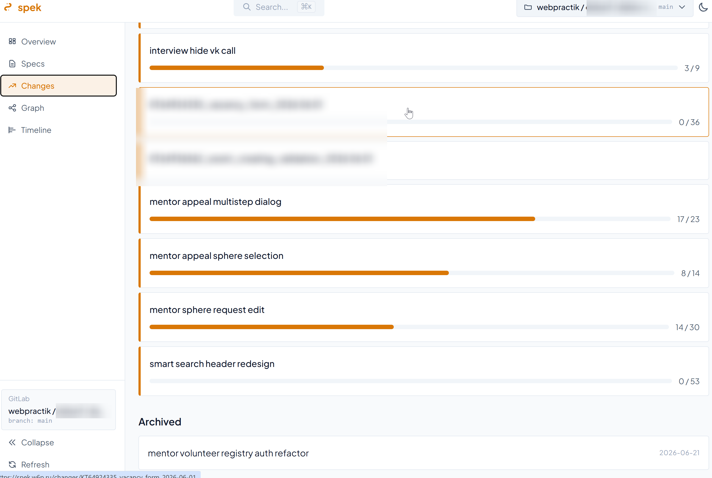
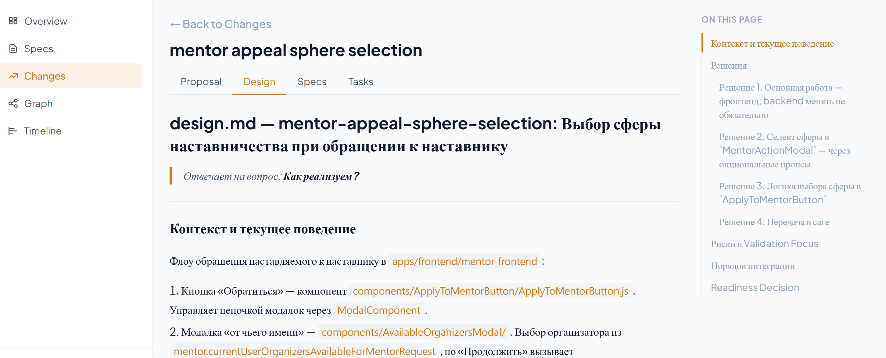

Тестировщик держит quality gate после аналитика и после разработчика
Одни спеки, один язык, сквозная трассировка — основной профит именно здесь
Ошибка: пережиток старого мышления
v1 · как мы сначала думали делать e2e
Аналитик
/explore/propose
quality gate
Разработчик
/apply
Тестировщикпишет e2e автотесты отдельным скилом
merge / prod
Думали, что e2e напишут тестировщики отдельным шагом — а это разрывает цикл «код ↔ тесты»
Правильно: e2e в одном цикле с кодом
v2 · e2e отдаём агенту разработчика
Аналитик
/explore/propose
quality gate
Разработчик
/apply
код ⇄ e2e
quality gate
merge / prod
Тестировщик держит quality gate после аналитика и после разработчика
Агент пишет тесты и гоняет их с правками кода в одном цикле — разрыв этого цикла и есть пережиток
План тестирования (test-plan.md)
План тестов — часть change, рождается вместе с ним
Генерируется агентом из proposal и спеки
Покрытие на нескольких уровнях: юнит/интеграция, компонентный (на фронте) и e2e-сценарии
Спеки дают проверяемый критерий: тест отвечает на пункт спеки
Tiny teams
Маленькие автономные команды — куда смещается формат работы
🙋
Кто слышал про tiny teams?
Из кого состоит tiny team
tiny team · маленькая автономная команда
Продукт-инженеробязательно
Full-cycle инженерзакрывает весь цикл — от смысла до прода
Маленькая команда, где каждый закрывает широкий срез работы
🙋
У кого в командах уже есть full-cycle инженеры?
Что вбирает full-cycle инженер
Full-cycle инженер
↑ в одного инженера вливаются целые дисциплины ↑
Аналитиказакрывает
QA / SDETзакрывает
DevOpsверхнеуровнево+ платформа помогает
Фронтенд? сеньорный навык
Бэкенд? сеньорный навык
Требования, тесты и devops закрываются. Фронт и бэк на уровне сеньора — пока открытый вопрос
Переходный период
Пока фронт и бэк не закрывает один инженер — делим работу прямо в плане и катим двумя прогонами.
plan.md## Фронтенд
- [ ] Форма и состояния UI
- [ ] Интеграция с API
- [ ] Компонентные тесты
## Бэкенд
- [ ] Эндпоинты и валидация
- [ ] Миграции схемы
- [ ] Интеграционные тесты
→
/apply front/apply backend
каждый прогон берёт свой раздел плана — можно отдать разным инженерам или агентам
Аналитика
Как аналитики заходили в сквозной SDD
Переход аналитиков на SDD
У многих уже стоял локальный harness для работы с вопросами к реализации
Но пришлось провести целый ряд встреч с отработкой рисков отказа от Confluence как источника истины
Docs as code даёт небольшие накладные расходы на старте — но работа с агентом нивелирует их кратно
Документация для стейкхолдеров
Человекочитаемую доку собираем из спек отдельным скилом.
источник истиныSDD-спеки
specs/ — поведение системы
→
отдельный скилЭкспорт
Человекочитаемый срез
→
стейкхолдерыConfluence
Публикуем при правках
Правим спеки → дока пересобирается скилом, без ручной синхронизации
Не плодим параллельную доку, которая устаревает на второй день
UseCase vs Gherkin
По умолчанию в OpenSpec — Gherkin.
Попробовали заменить на UseCase по просьбе аналитиков — человеку он читается удобнее
Получили деградацию качества автотестов: Gherkin точнее как приёмочные критерии
Вернули Gherkin как основу
Для некоторых элементов дополнительно генерируем UseCase — отдельным файлом в change OpenSpec
Работа с мультирепо
Идеально — монорепо. Но у нас 2 монолита (фронт и бек) и пачка сервисов и микросервисов вокруг — каждый в своём репозитории.
Завели meta repository — в нём живёт весь наш harness и OpenSpec
make up клонирует все репы вложенными папками → по сути превратили в монорепо
В agents.md мета-репы — карта вложенных репозиториев: что за проект и куда идти в том или ином случае
В каждой репе свойagents.md — они работают рекурсивно. Тянет и большую кодовую базу
Мета-репозиторий изнутри
meta-repo/ # наш harness + OpenSpec
├── Makefile # make up → клонирует все репы
├── agents.md # карта: что за проект и куда идти
├── openspec/ # спеки и changes (источник истины)
├── frontend/ # монолит · фронт ← отдельный репозиторий
│ └── agents.md # свой контекст, работает рекурсивно
├── backend/ # монолит · бэк ← отдельный репозиторий
│ └── agents.md
├── service-auth/ # сервис
│ └── agents.md
└── service-billing/ # микросервис
└── agents.md
Трассировка смысла
От строки кода — к «зачем»: код ↔ коммит ↔ change ↔ источник истины
Трассировка: от строки кода к смыслу
Каждый коммит подписан названием change, на основе которого вносился.
шаг 1Кусок кода
Агент находит строку, которую нужно понять или поменять
→
шаг 2 · gitКоммит
git blame → коммит, подписанный change-id
→
шаг 3 · changeСмысл
Открываем change: зачем писался код и каким был дизайн
Связь «код ↔ change» восстанавливается локально, без похода в трекер.
Почему это реально работает
Change > задача в Jira: он держит и смыслы (зачем), и дизайн (как решали) — рядом с кодом
Локальный поиск по спекам и changes сильно быстрее, чем дёргать трекер
Очень кайфово видеть, как агент понимает смысл кода через поиск по спекам — не по догадкам, а по источнику истины
✳ claude · harness
> сессия истекает раньше срока — разберись и почини
● Нашёл код, который уже частично решает задачу
⎿ auth/session.ts:42 — ротация токена есть, TTL захардкожен
● Ищу связанные спеки…
⎿ specs/auth/spec.md — «TTL сессии — 30 минут»
⎿ changes/session-ttl/ — активный change, дизайн готов
● Сверяю намерение с источником истины, а не гадаю
⎿ правлю по proposal + design из change▋
change-центричная парадигма
Жизненный цикл change видим в моменте: как менялся, какие коммиты привязаны, какие авторы над ним работали
Change ≠ task: он начинается раньше — ещё на досках дискавери, и держит смыслы и дизайн
Поэтому сделали свой сервис визуализации спек — spek: удобный поиск, статистика, связи, статус прогресса
spek · список changes

spek · просмотр change

Один change: proposal · design · specs · tasks — в одном месте
Всё ли делать через change?
Нет. Правки, которые не трогают спеки, запускаем обычными промптами — без change.
Косметика UI: передвинуть или покрасить кнопку
Баг по спеке: поведение уже описано в источнике истины — просто чиним код под него
Что можно без change, а что нельзя — фиксирует регламент разрешённых операций
Технический change
Сокращённый инженерный change: спеки может не менять, но контекст решения держит.
1Смысл
Зачем меняем — цель и контекст
2Реализация
Как решили — ключевые решения
3План
Проверяемые шаги реализации
Типичный пример — рефакторинг: поведение (спека) не меняется, но смысл, реализация и план всё равно фиксируются в change.
Контроль
Регламент можно нарушить — иногда change создают «мимо» или не создают вовсе.
Сейчас: трассировка коммитов в spek — видно, что и на основе какого change вносилось
Дальше: возможно, агент-валидатор в CI будет проверять соблюдение регламента
Поленился создать change
→
Регресс качества спек
→
Замедление дальнейшей работы
Harness
Обвязка вокруг агента, на которой едет весь процесс
SDD — фундамент нашего harness
Сверху кладём всё остальное
Инженерные практикиСкилыПравила и политикиГотовые командыКонтекст проекта
Сквозной SDD
Главный и основной источник контекста — единый источник истины для людей и агентов
Практика
2 уровень локальный агент
3 уровень облачный runtime
Сквозной SDD
фундамент
фундамент
Quality gates перед merge
усиливает
обязательно
Observability трейсов
усиливает
обязательно
Sandbox: эфемерные окружения + изоляция
усиливает
обязательно
Action Policy / HITL
ручной HITL
обязательно
Evals: автотесты агентов
усиливает
критично
Resource & cost limits
собирать данные
обязательно
Multi-agent coordination
—
обязательно
Модельно-независимый harness
желательно
критично
AI Gateway (LLM-прокси)
усиливает
обязательно
Агент с выходом на L3
—
обязательно
Agent-first IDP (платформа)
—
критично
Скилы — часть нашего harness
берём из сообществаГотовое
superpowers — берём часть, например TDD
agent-browser от Vercel
skill.sh — независимость от агента
пишем самиСвои скилы
Свои скилы для Playwright
Оптимизация путей агента: дебаг, проверки, просмотр логов и прочее
Кастомные под наш стек — на некоторых проектах
вокруг процессаОбвязки OpenSpec
Разбиение работы по ролям
Создание пирамиды тестирования
Экспорт в Confluence
Сегментирование спек по доменам
Критические вопросы, которые должны быть заданы
Текущие эффекты и следствия
Узкое место сместилось
Не всегда и не у всех оно теперь в разработке
Часто — в продакт-менеджменте: бэклог большой, но без DoR
И в пути до прода — чтобы докатить изменение до продакшена
Эффект и бейзлайн
Бейзлайн оценок у нас уже был — список оценок типовых функциональностей и компонентов
После уверенного адопшена переоценили бейзлайн заново
Многие оценки сократились
Это и есть наш доказанный эффект ускорения — на своих же задачах
Выводы
Что забираем с собой
Внедряйте AI в SDLC сквозным образом — единый процесс через всю цепочку
Внедряйте SDD — спеки как источник истины и общий язык для людей и агентов
Harness — это движок/ядро вашего производственного процесса. И на рельсах SDD оно едет гораздо увереннее.